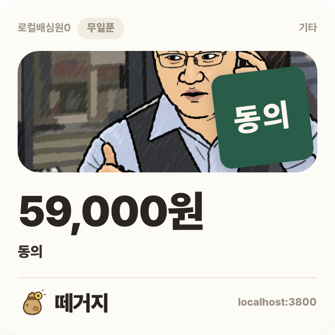
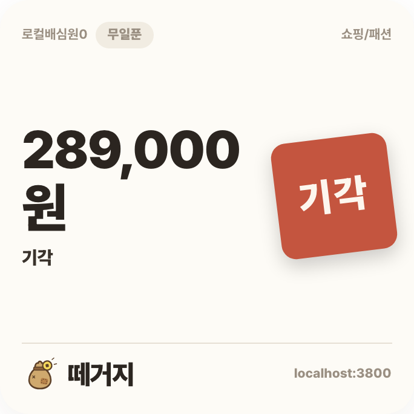
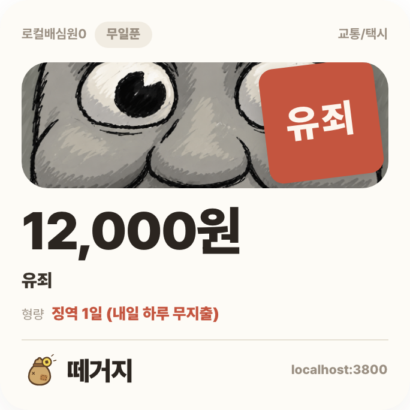
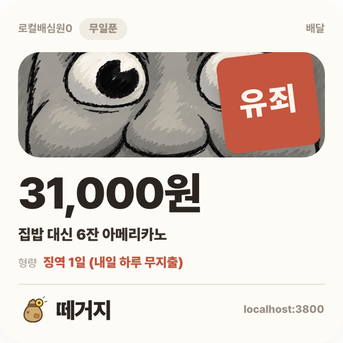
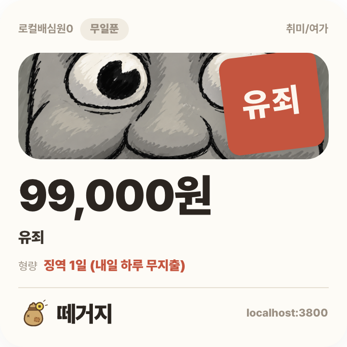

실제 모델 판결 5개 — 문구와 공유 카드구매 승인
업무용 키보드 · 59,000원
AI 저장 성공

밈: 진행시켜
모델이 만든 문구연말 잔고 0원 예언
이 속도면 연말엔 키보드값만 남아요.
카드 제목: 동의 · 공개 범위 필터로 치환
구매 기각
한정판 운동화 · 289,000원
검수 실패 · 기본 문구

밈: 없음 (검수 실패 폴백)
모델이 만든 문구 (미반영 초안)64잔 대신 운동화
64잔 아메리카노가 한 켤레로 바뀌네.
카드 제목: 기각
유죄 · 순한맛
택시 · 12,000원
AI 저장 성공

밈: 실망
모델이 만든 문구알람 1초, 택시 8회
지각 한 번에 택시 8회분이네요.
카드 제목: 유죄 · 공개 범위 필터로 치환
유죄 · 매운맛
치킨 배달 · 31,000원
AI 저장 성공

밈: 실망
모델이 만든 문구집밥 대신 6잔 아메리카노
비 오면 라면 끓여 먹어라.
카드 제목: 집밥 대신 6잔 아메리카노
유죄 · 지옥맛
게임 스킨 묶음 · 99,000원
AI 저장 성공

밈: 실망
모델이 만든 문구99k로 22잔
실력은 그대로고 잔고만 22잔어치 증발했네.
카드 제목: 유죄 · 공개 범위 필터로 치환